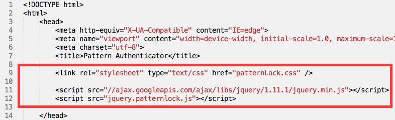

Created: 29/10/2014
By: Bharat Patil
Email: sun.bharat.patil@gmail.com
Thank you for purchasing my jQuery plugin. If you have any questions that are beyond the scope of this help file, please feel free to email via my user page contact form here. Thanks so much!
Before you can start using patternLock you have to include the css and the js files inside the <head></head> section of your webpage:
<link href="patterLock.css" type="text/css" > <script src="//ajax.googleapis.com/ajax/libs/jquery/1.11.1/jquery.min.js"></script> <script src="jquery.patternlock.js"></script>
Once above files are included you can use patternLock like below
<div id="pattern"></div>
<script type="text/javascript">
$(document).ready(function(){
$('#pattern').patternLock();
});
</script>
Output
You can even use jquery class selector to create pattern lock
<div class="pattern"></div>
<script type="text/javascript">
$(document).ready(function(){
$('.pattern').patternLock();
});
</script>
Output
You can choose to show center circles as well as you can change size of it
<div id="patternCircles"></div>
<script type="text/javascript">
$(document).ready(function(){
$('#patternCircles').patternLock({
centerCircle: true,
centerCircleSize: 20
});
});
</script>
Output
You can choose to hide pattern line. Also you can change color or width of line. Pattern line is by default visible.
Visible Pattern Line
<div id="patternLineEx"></div>
<script type="text/javascript">
$(document).ready(function(){
$('#patternLineEx').patternLock({
lineWidth: 10,
patternLineColor: '#ff0000',
showPatternLine: true
});
});
</script>
Hidden Pattern Line
<div id="patternLineEx"></div>
<script type="text/javascript">
$(document).ready(function(){
$('#patternLineEx').patternLock({
showPatternLine: false
});
});
</script>
Output
| Visible Pattern Line | Hidden Pattern Line |
To set background color of selected pattern hole, you can use 'selectionColor' option. It accepts css color value. If you don't want to highlight then pass 'transparent' as value.
<div id="patternHighlightColor"></div>
<script type="text/javascript">
$(document).ready(function(){
$('#patternHighlightColor').patternLock({
selectionColor: '#ff0000'
});
});
</script>
Output
Bharat Patil